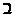
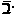
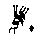
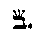
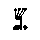
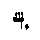
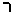
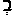
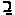

OF THE HEBREW TEXT.
In the modern commentaries we very frequently meet with the objectionable word "corruption" used of the Hebrew text of the Old Testament. As specimens of this feature of modernism, the following are taken at random from one of the latest commentaries:-
- This
"probably signifies not only a new paragraph but a later
hand".
- This
"leads to the conclusion that there is some original corruption
of the Hebrew text."
- "The text in this verse is extremely difficult to
interpret; and no satisfactory translation can be given of
it."
- "The Hebrew of this verse seems to be so corrupt that
there is no satisfactory meaning to be obtained from it."
- "It is certain that the original text must be
corrupt."
- "It is better to regard it as being in some way a
corrupted text ... but is now unintelligible."
- "These three verses are extremely corrupt, and it is probably impossible to restore the text with any certainty."
Such remarks abound; and very few pages are free from them. There is a continual running confession of inability to understand the Hebrew text. Like the schoolboy who always thinks "the book is wrong", modern critics never seem to suspect that the difficulty lies with themselves and not with "the Book". We must accept their confession, whatever the explanation may be. The object of this Appendix is to show that those who are so ready to speak about "corruption" can have little or no knowledge of the Massorah, or of its object.
We have explained its character somewhat in Ap. 30. We now propose to point out that its one great special aim and end was to make such "corruption" impossible. Well knowing the frailties and infirmities of human nature, those who had charge of the Sacred Text hedged it round on all sides with regulations and information called the Massorah, because it was meant to be " a fence to the Scripture", and because it should be, thus, next to impossible for a scribe to make a mistake in copying it.
Some general facts are given in Ap. 30 (which should here be consulted); but further particular features are now added from Dr. C.D. Ginsburg's four large folio volumes, which contain the Massorah so far as he has been able to collect, arrange, and transcribe the writing in smaller characters at the top and bottom of every page of most of the accessible manuscripts containing it.
- All the
letters of the Hebrew text were counted: not as a piece of mere
curiosity, but that the number of each letter in each book being thus
known to the scribe he might easily check his work, and ascertain
whether one letter had escaped or got over "the fence". He
was informed how many Alephs ( = A ), there should be, how many
Beths (

= B ), etc. in each book respectively. - There
are five consonants, which when they occur at the beginning of a word
must have a dot within them, called a
Dagesh. This dot in no way affects the meaning of the
word.
In certain positions, other than at the beginning of a word, these five letters may, or may not, require this Dagesh. Now, each of these dots was safeguarded; for one might so easily be omitted or misplaced: hence, the scribe was assisted by an instruction that, in cases where any of these five letters should not have a Dagesh, he must make a small mark over it, called a Raphe. This again in no way affected either the sound or the sense; but it reminded the scribe that in these cases he had to do one thing or the other. He must write it (if the letter were, say, a Beth ( = B ) either or

. - Again:
certain letters have come down with the text, from the most ancient
times, having a small ornament or flourish on the top: for example, we
find
Aleph (=A) with 7 Taagin 
Beth (=B) with 3 Taagin 
Gimel (=G) with 4 Taagin 
Daleth (=D) with 3 Taagin 
These ornamented letters were quite exceptional, and implied no added meaning of any kind: but, so jealously was the sacred text safeguarded, that the scribe was informed how many of each of the letters had these little ornaments: that is to say, how many Alephs ( = A ), and how many Beths ( = B ), etc, had one, two, three, or more.
These ornaments called Ta'agim (or Tagin), meaning little crowns. The Greek-speaking Jews called them little horns (Hebrew keranoth) because they looked like "horns". The Authorized Version and Revised Version rendering of keraia (Greek = horn) is "tittle", which is the diminutive of "title" and denotes a small mark forming such title.
Modern commentators, and even the most recent Dictionaries of the Bible, still cling to the traditional explanation that this "tittle" is the small projection or corner by which the letter Beth ( = B ) differs from kaph ( = K ); or Daleth ( = D ) differs from Resh (

= R ), etc.But the Massorah informs us that this is not the case, and thus, tradition is quite wrong. We give a few examples showing how even these little ornaments were safeguarded:-
Rubric , � 2 (Ginsburg's Massorah, volume ii, page 680-701) says: "Aleph with one Tag: there are two instances in the Pentateuch ( Exodus 13:5, in 'asher ( = which ), and verse 15 1, in 'adam ( = man )".
Rubric , � 3, says: "There are seven Aleths ( = A ) in the Pentateuch which respectively have seven Taagin".
Rubric , � 2, notes Beth ( = B ) with one Tag, as occurring only once ( Exodus 13:11, yebi'aka = brings thee).
Rubric , � 3, notes Beth ( = B ), as occurring in four instances with two Taagin videlicet, Genesis 27:29 (ya'abduka = may serve thee); Genesis 28:16 (bammakom = place); Exodus 7:14 (kabed = is hardened); Exodus 23:23 (vehayebusi = and the Jebusites).
Rubric , � 4, gives four instances where Beth ( = B ) has three Taagin: and so on, through all the alphabet, noting and enumerating each letter that has any Tagin: thus safeguarding the sacred text, so that not one of these little ornaments might be lost.
It was these Taagin the Lord referred in Matthew 5:18, and Luke 16:17; when He said that not only the smallest letter (
 =Yod = Y ), but that not
even the merest mark or ornament (Tag) should pass away
from the Law until all things should come to pass. So that our Lord
Himself recognized these Taagin, which must have been in
His Bible from which He quoted.
=Yod = Y ), but that not
even the merest mark or ornament (Tag) should pass away
from the Law until all things should come to pass. So that our Lord
Himself recognized these Taagin, which must have been in
His Bible from which He quoted.
- In
cases of spelling, where a word occurs a certain number of times, but
one or two cases with a slightly different spelling (where, for example,
one was with a short vowel and another with a long or full vowel), these
are noted, numbered, and thus safeguarded.
The scribe is not left to imagine that some of these are incorrect, and so be tempted to correct the smaller number by making them conform with the larger number of cases in which the word is spelt differently.
It is needless to give examples of such instances. - Where a
certain word or expression occurs more or less frequently in varying
forms, these are all noted, numbered, and distinguished. For example,
the word bayith (= house); its occurrences with different
vowels and accents are all safeguarded. So with its
occurrences with certain prefixes and suffixes: that is to say,
"in the house", six occurrences, where the letter
Beth has a Sheva (

) are safeguarded against thirty-two where it has a Pathach (
) instead.So with its combinations with other words: two are noted as being "in this house which is called" ( , � 244 ); nineteen as being"into the house" ( , � 245 ); twice "and within the house" ( , � 246 ); four times "and the house of", and "and into the house of" ( , � 247 ); twice "the house of her husband" ( , � 249 ); "house of Elohim" five times without the Article: these five exceptional cases being thus safeguarded against the forty-eight occurrences where Elohim has the Article ( , � 251 )
In nine instances "House of Elohim" is followed by the demonstrative pronoun "this": but, in five cases this pronoun is the Chaldee dek (Ezra 5:17; 6:7, 7, 8, 12), and in four cases it is edenah. These latter are thus safeguarded.
The occurrences of the expression "the house of Israel" are noted separately in the Pentateuch and the Prophets ( , �� 254, 255 ) and in , � 256, these are further distinguished from the expression "the sons of Israel" (the words beyth, "house of", and beney, "sons of", being much alike in Hebrew).
"Shearing house" is noted as occurring twice ( , � 258 ), and "house of restraint" as occurring three times ( , � 257 ). "Jehovah Adonai" is noted as occurring 291 times; but the fewer occurrences of "Adonai Jehovah" are safeguarded against the more usaul form (
, � 178 ). Jehovah our Adonay is safeguarded against the more form "Jehovah our Elohim" (
In the same way, the following exceptional phrases are distinguished: "Jehovah the Elohim", "Jehovah Elohim of", "Jehovah Elohim Zeba'oth", "Jehovah Elohim of heaven", "Jehovah my Elohim", etc., etc. The expression "the sins of Jeroboam", which occurs fifteen times, is in ten instances followed by "the son of Nebat". The shorter phrase is thus exceptional; and the scribe is warned not to make any of the five like the other ten by adding "the son of Nebat".
These examples might be enumerated by hundreds from Dr. Ginsburg's Massorah; but enough are here given to show the Massorah was indeed "a fence to the Scriptures".
In the face of these facts one might smile (if the case were not so serious) at the readiness of modern critics to use the word "corruption" whenever they have to admit that they cannot understand the text as it stands. We have no reason to doubt the truth of their confessions; but it is better, and easier, and happier, and safer to believe God.
(*1) Ginsburg gives v. 13; but vol. ii shows that it is v.